|
PSV - Roda JC (1-2) 29 februari 2004 |
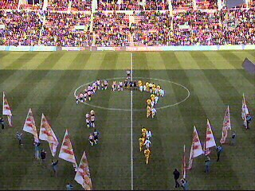
Roda speelt in de geel/gele tenues.
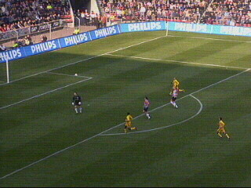
In de 11e minuut stift Kone de bal mooi over
doelman Waterreus heen: 0-1
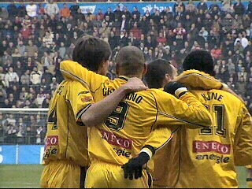
Feest bij de spelers.
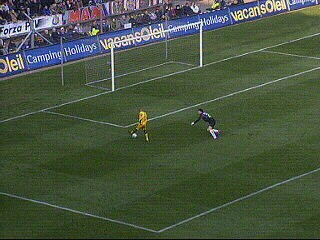
Nadat Bouma te kort terugspeelt op Waterreus,
gaat Cristiano om de doelman heen en schuift de
bal in het verlaten doel: 0-2 (18').
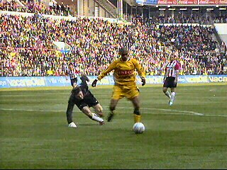
Op de achtergrond kijkt Bouma verslagen toe.
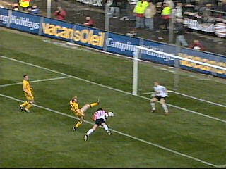
Vennegooor of Hesselink kopt de bal in uit een
voorzet van Kezman: 1-2 (35').
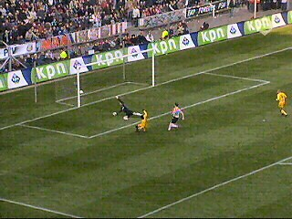
Kone schiet even later op de paal (36').
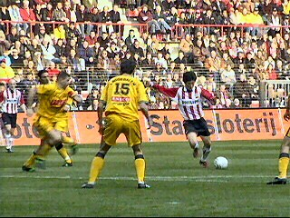
Park doet hetzelfde (68').
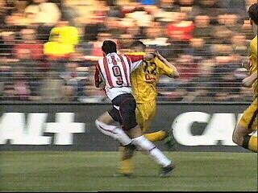
Kezman werk Luijpers naar de grond (77').
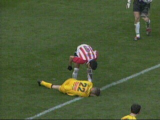
Hierbij loopt Mark een wond onder het oog op en
moet vervangen worden.
De gefrustreerde Kezman die nauwelijks meer
weet te scoren ergert zich aan Luijpers' gedrag.
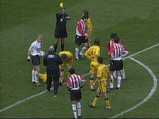
In het tumult dat hierop volgt is er geel voor
De Jong en Senden.
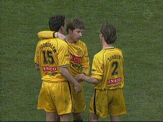
Er volgen spannende minuten met enkele aardige
mogelijkheden voor beide teams maar zelfs de
extra speeltijd van 3 minuten brengt geen
verandering meer in de stand.
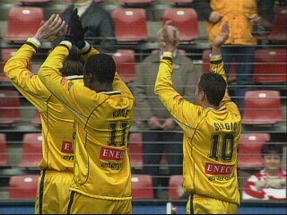
Eindelijk weer eens gewonnen bij PSV.